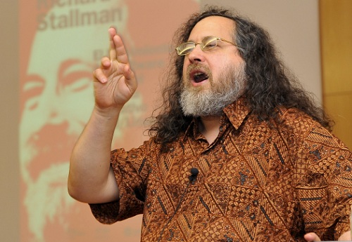

Richard Stallman 指責 Ubuntu 是「間諜軟體」

◎本文原載 Linux Pilot，原文章連結按此。
自由軟體基金會主席及開源軟體之父 Richard Stallman，最近指責 Canonical 的 Linux 作業系統 Ubuntu 是「間諜軟體」，原因是 Canonical 在 Ubuntu 12.10 加入了 Amazon 的搜尋功能。這項指控是否成立？

有用過 Windows 8 的朋友，大概都會用過它的 Windows UI （舊稱 Metro UI） 搜尋應用程式。事實上這機制早已在 Ubuntu上出現，用戶可以劃一地在搜尋欄搜索網上或系統的任何內容，只是現在加入了新功能令用戶可同時搜尋 Amazon 內容而已。Canonical 首席執行長 Mark Shuttleworth 就此作出解釋，表示 Canonical 只不過是把 Amazon 的搜索結果整合，如果用戶通過 Ubuntu 的搜索購買了亞馬遜的商品，Canonical 將會得到部分收入。
Stallman 表示問題重點是 Canonical 收集用戶個人資訊，但 Shuttleworth 的回覆是 Canonical 會自動將用戶日誌做匿名化處理，目的是提供更好的搜索體驗。如果用戶覺得不安，可以自行關閉 Amazon、Google、Facebook 和 Twitter 服務的相關選項。不少開源界人士都認同 Amazon 的搜索結果與購物有關，整合的目的顯然是為了經濟利益。但天下不會有免費的午餐，Canonical 作為一間企業，就需要有收入。收入不外乎兩種，一是向用家徵收，一是向廣告商徵收。微軟走的是第一條路，Canonical 只不過想走另一條路而已。
Stallman 支持者可能會問：為什麼 Fedora 和 openSEUSE 沒有如此做？很簡單，因為支持此兩個 Linux 版本的兩家企業 Red Hat 和 Novell，本來就另外有一個收費的企業版本作為收入來源。今後 Ubuntu 如果要成為像 Fedora 和 openSUSE 一樣，就有需要將 Ubuntu 分家成「開源版」和「收費版」，由收費版向「開源版」提供財政支援，才能徹底平息此等風波。
作為開源軟體的先驅，筆者對 Richard Stallman 非常敬重，但縱使他是「教主」，並不代表我們對他說的話照單全收。開源技術在 IT 產業本來就並不是多數派，大家應該體諒不同團體的立場，只有大家齊心向外，開源技術才能開花結果。
You may be interested in the following articles:
- 自由軟體的故事：Richard Stallman － 自由軟體之父 - 2007-10-26